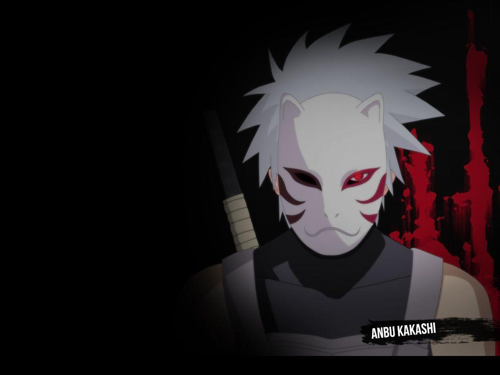

The Hidden Leaf Village is the first village that was ever formed by Shinobi. The Senju and Uchiha clan had been rivals for years before they came to an agreement with the help of Hashirama Senju and Madara Uchiha. The two of them built a village together and called it the Hidden Leaf Village (Konoha).
The Anbu short for Ansatsu Senjutsu Tokushu Butai meaning Special Assassination and Tactical Squad that are covert operatives of capable ninja that are dispatched by their village leader. There are apparently no true ranks within the Anbu; team leadership and hierarchy seem to be based on merit and experience. The leaders of the teams are called squad leaders a position held in high regard.
The Konoha Military Police Force is — as the name suggests — the judicial organisation of Konohagakure. Initially believed to have been founded by the Uchiha,[1] in actuality, it was founded by the Second Hokage, and was given to the Uchiha as a sign of trust and good faith between the Senju and themselves.